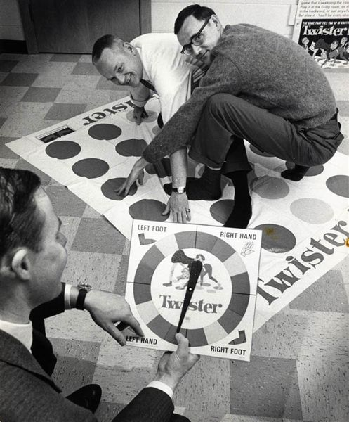
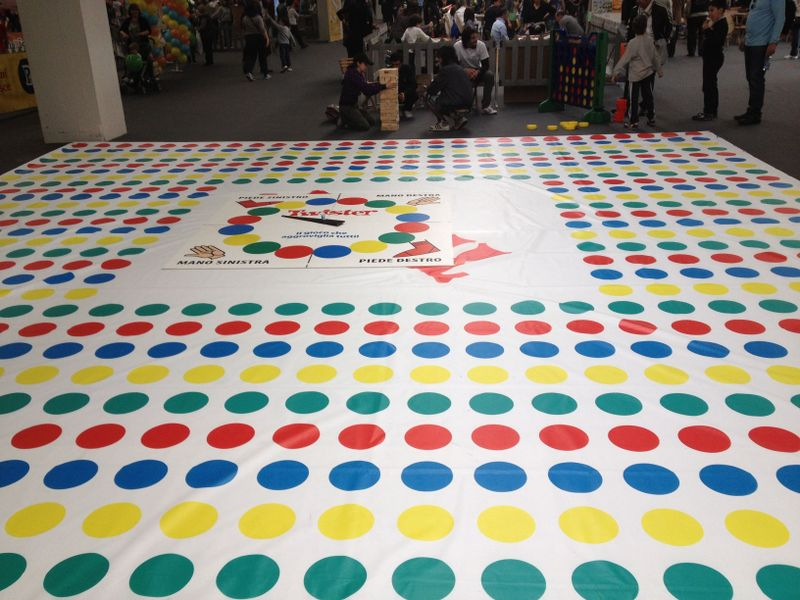
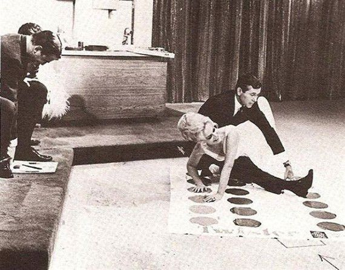
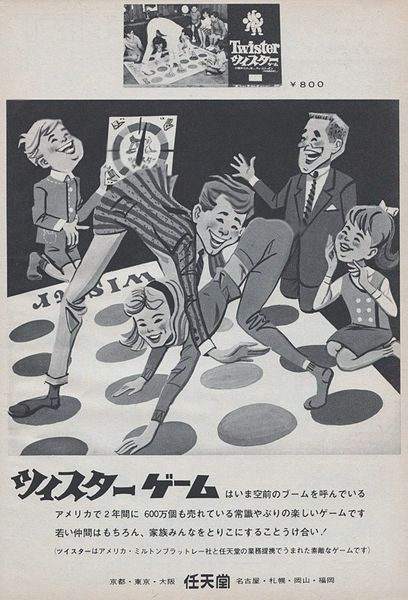
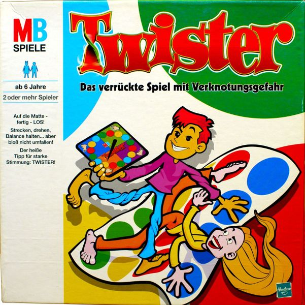
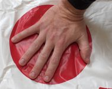
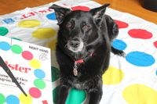
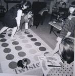
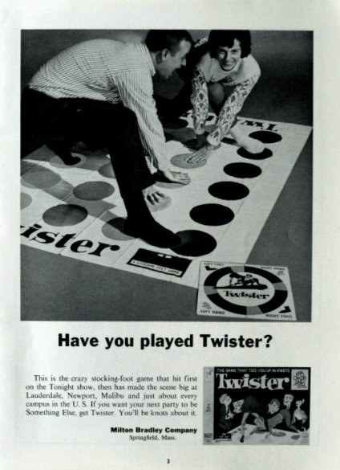

Home
Info
Media
Versions
Suggestions
More
This is a gallery filled with photos regarding the beloved game "Twister".

Creators of the game playing Twister in 1966

Giant version at Play 2012, Modena (Italy)

Twister Apperance on The Tonight Show

A 1967 Japanese ad for Nintendo's Twister

German version of the game

Right Hand on Red

My dog, Zuzu La Rue, really enjoys Twister

Joyce Grant and friends playing Twister in 1966

A 1973 Twister ad